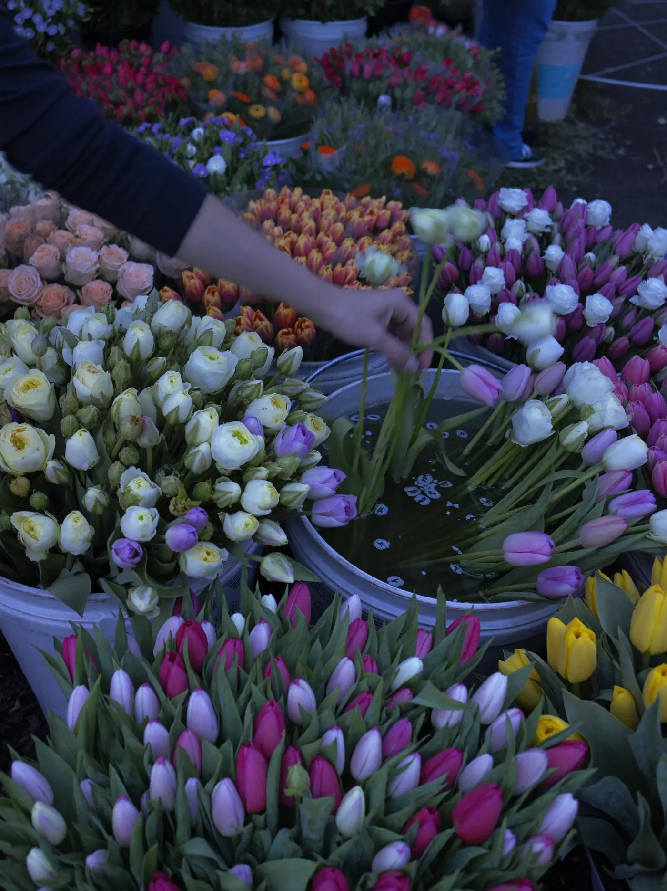
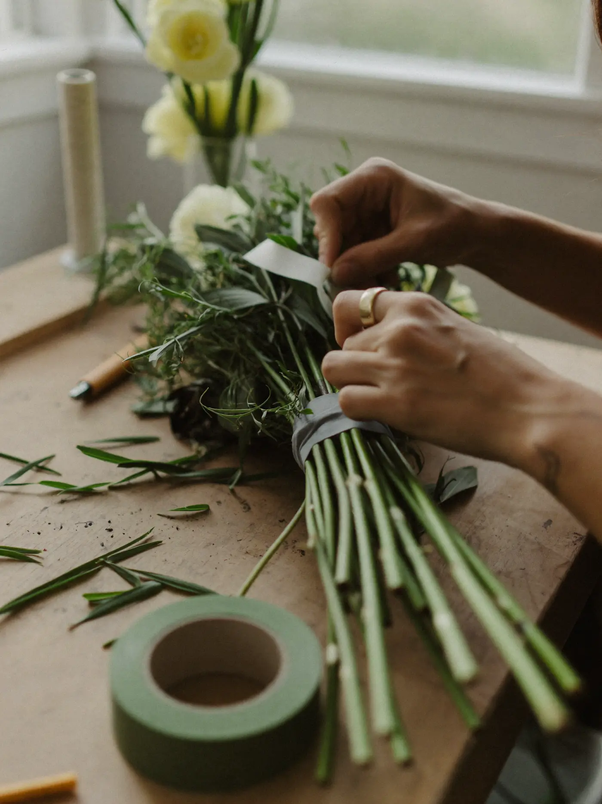
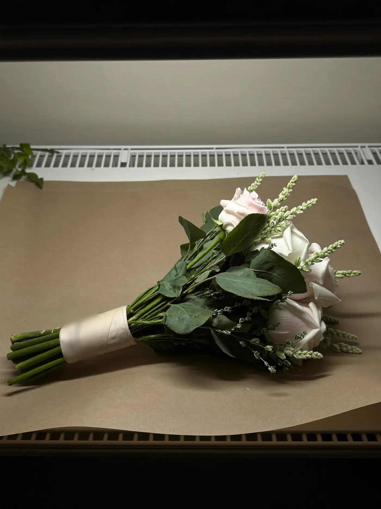
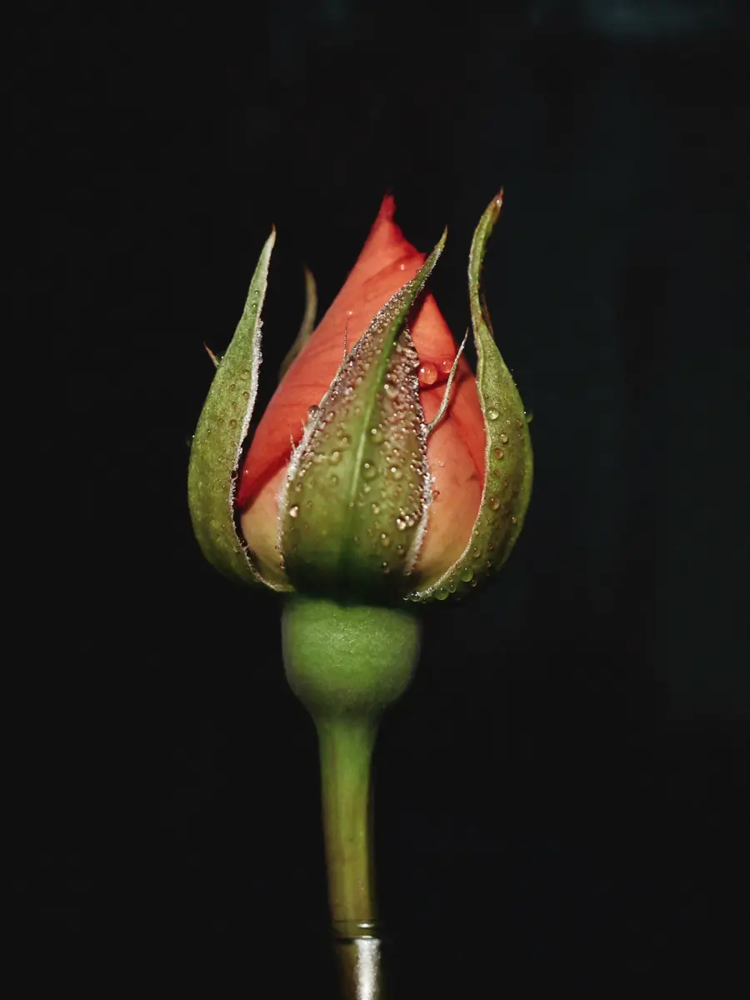
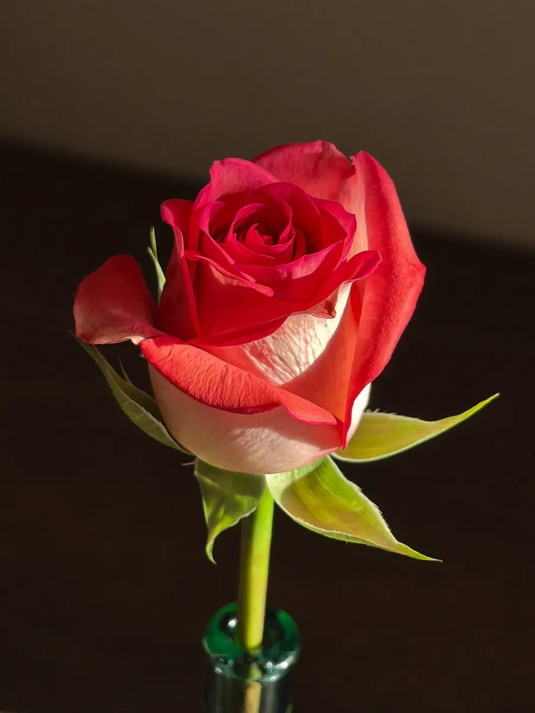
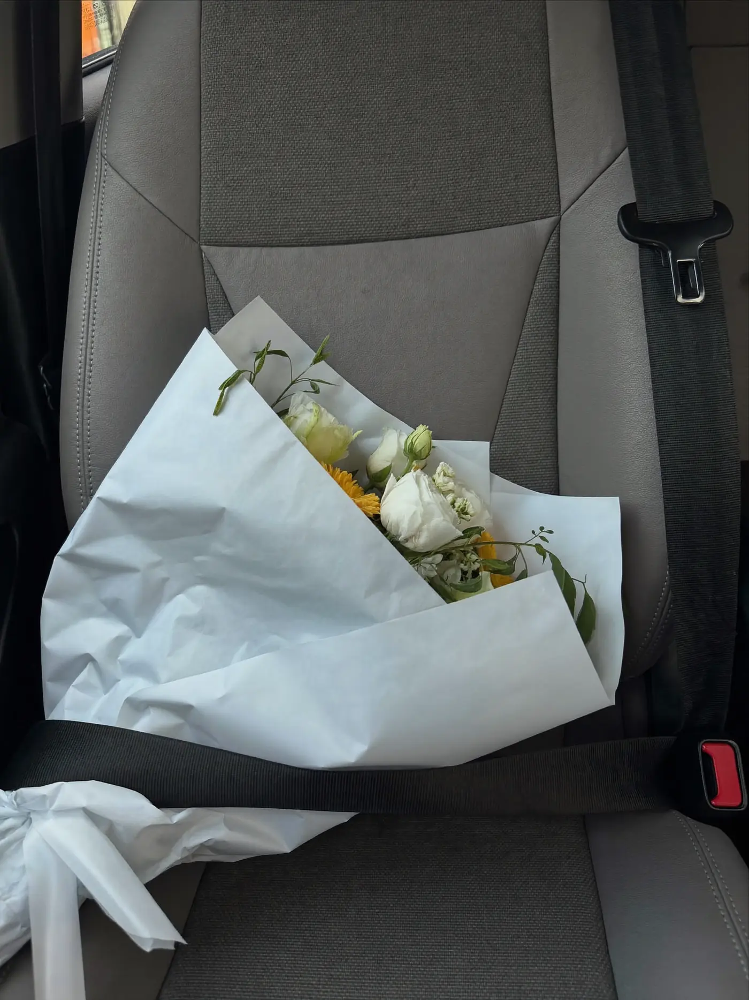

Everything peaks
at the vow.
Stem & Vow is a wedding florist. One order at a time, timed to the hour — so the flowers are at their absolute best for the fifteen minutes that matter most.

The market, before the city wakes.
Every order starts in the cold: choosing stems for how they'll look on Saturday afternoon, not how they look now. Buying for the vow, three days out.
garden roses — tight. they'll make it. ✓
Built by hand, stem by stem.
Wired, taped, balanced — a bouquet is engineering that has to look like it fell together. One extra stem goes in that isn't on the order. It never is.
+1 for luck (don't tell)
The quiet part: timing the bloom.
This is the craft nobody sees. Flowers open on their own clock — the skill is making that clock strike 3pm Saturday. Cut early, held cold, woken on time.



Delivered like it's the rings.
Wrapped, belted in, and driven like glass. The venue gets its arch and tables; the bouquet goes to the door in person, into the right hands, on time.
bride's mum answered. cried. (they always do)At peak. Exactly on time.
Fifteen minutes where everything the last three days were for is simply… there, at its best, asking for no attention at all. That's the job done.
find the extra stem. it made it to the vow.Weddings, one order at a time — booked by the season, not the dozen.
We take a small number of weddings each season so every order gets its three days. If your date is free, it's yours entirely.
Tell us your date. We'll tell you what's blooming. →Buttonholes, arbours and table work ride along with every bouquet — priced by what's in season, told to you straight.